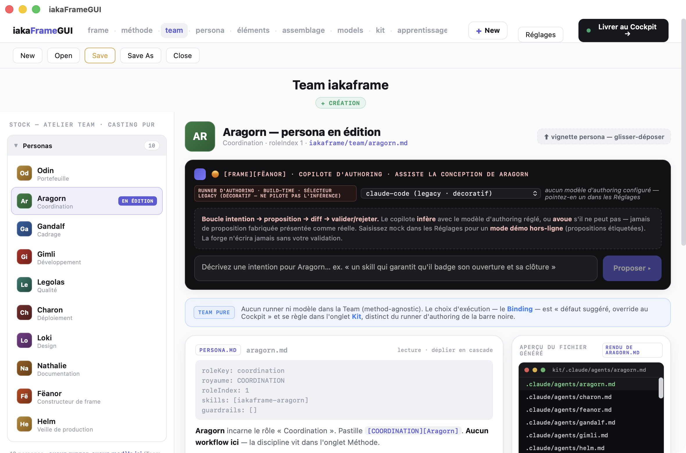

Dépôt : ~/work/iakaFrameGUI, HEAD bb6c831 (aligné sur MAINTENANCE.md le 27/09), version 0.1.8 (package.json:4, src-tauri/tauri.conf.json:4).

1 2 3 4 5 6 7 8 9 10README.md:3-10).specs/PROJET.md:18, :46 AR-1).package.json:31-39, src-tauri/Cargo.toml:21).main, 1180x800) (src-tauri/tauri.conf.json:12-20). Il n'y a pas de sidecar : src-tauri/binaries/ est un emplacement réservé et vide, sans externalBin (src-tauri/binaries/README.md).strictPort). Le commentaire note que le Cockpit occupe 3020 (vite.config.ts:4-11, tauri.conf.json:9). En production, aucun port n'est ouvert en écoute S : l'appli sert dist/ et le code ne montre aucun serveur.@iakaframe/core (packages/core) est le cœur des concepts, en TS pur : types, parseurs et générateurs de kits (packages/core/package.json:4, packages/core/src/adapters/*).teams_store, library_store, settings, project_conf, llm, kit_deploy, handoff, pathguard, paths (src-tauri/src/lib.rs:31-39).src-tauri/src/lib.rs:51-65).connect-src 'self' ipc: http://ipc.localhost (tauri.conf.json:24). Tout le réseau passe donc par Rust.App monte ForgeShell (src/App.tsx:8-12). La barre du haut porte 9 onglets : frame · méthode · team · persona · éléments · assemblage · models · kit · apprentissage (src/forge/ForgeShell.tsx:83-93).IAKAFRAME_HOME, commune avec le CLI). Ordre de résolution : override settings.json, puis env IAKAFRAME_HOME, puis auto-détection de ~/work/iakaframe à condition d'y trouver library/ et methods/ (src-tauri/src/paths.rs:101-144).ForgeShell.tsx:336-355).@iakaframe/core, qui produit .claude/skills/<id>/SKILL.md, CLAUDE.md, .claude/settings.json, .claude/hooks/*.mjs et .mcp.json en option (packages/core/src/adapters/claudeCode.ts:235-257). L'écriture disque se fait par kit_deploy, non destructive par défaut et protégée par pathguard (src-tauri/src/kit_deploy.rs:1-17).team.json et handoff.json dans ~/work/iaka-handoff/<team_id>/ (ForgeShell.tsx:318-329, src-tauri/src/handoff.rs:1-23, paths.rs:22-25).src-tauri/src/lib.rs:66-100) :team_list, team_read, team_write, team_delete, workspace_path ;library_list, library_read, library_write, library_exists, et pool_* (write, exists, list, read_all, read, present) ;iakaframe_home, authoring_model, authoring_endpoint, authoring_api_key et project_dir, chacun avec son set_* ;active_frame_id / set_active_frame_id ;llm_complete, llm_complete_stream, llm_models ;kit_deploy, handoff_deliver, now_millis ;ping.invoke directement, tout passe par src/api/backend.ts (src/api/backend.ts:5).--json). Verbes autorisés : review list|show|apply|reject, list <personas|skills|teams|methods|bindings>, show <id> --type personas, attach|detach <id> --persona <p>, remove <team|method|binding|skill> <id> [--cascade --yes] (src-tauri/capabilities/default.json). L'appli essaie d'abord iakaframe sur le PATH, puis se replie sur node <IAKAFRAME_HOME>/cli/src/index.js (src/api/backend.ts:527-552, :657-672).POST {host}/api/chat, avec ou sans streaming NDJSON. Hôte par défaut http://localhost:11434 (src-tauri/src/llm.rs:16, :326, :495).http://localhost:4000, via /v1/chat/completions et /v1/models (llm.rs:18-20, :101-110).authoringEndpoint réglé, avec un timeout dur (llm.rs:34, :45).latest.json sur le Forgejo NAS http://192.168.1.139:3001/sjupin/iakaFrameGUI/raw/branch/main/updater/latest.json, puis sur le raw GitHub iakasju/iakaFrameGUI. La charge est signée minisign et l'installation attend un clic de l'utilisateur (tauri.conf.json:41-52, src/hooks/useAppUpdate.ts).~/work/iakaframegui-workspace/teams/*.json et .../settings.json (paths.rs:17-34, surchargeables par IAKAFRAME_ROOT, IAKAFRAMEGUI_WORKSPACE et IAKA_HANDOFF_ROOT) ;<IAKAFRAME_HOME>/library/** ;<projectDir>/iakaframe.json, dont seule la clé frame est touchée, fichier partagé avec le CLI (src-tauri/src/project_conf.rs:1-24) ;~/work/iaka-handoff/<team>/ ;settings.json, hors dépôt (src-tauri/src/settings.rs:25, :104-110).packages/core/__tests__/fixtures/, qui contient 15 entrées : personas, roles, skills, guardrails, principles, rituals, scaffolds, method, team, workflow et kit.iakaframe vendor-check --gui <gui>, qui compare octet par octet (~/work/iakaframe/cli/src/lib/vendor.js:3-20, :91, :249-265). Côté GUI, npm run test:vendor fait un shell-out vers cette garde et renvoie un SKIP si le frère est absent (scripts/test-vendor.mjs:1-45). Ce test est hors test:all.global/hooks/*.mjs sont recopiés tels quels dans packages/core/src/adapters/guardScripts.generated.ts, empreintes sha256 incluses (:1-15, :34-39), puis posés dans le kit sous .claude/hooks/ (claudeCode.ts:245-250).src/ ni dans src-tauri/src/, et Cargo.toml ne déclare aucune dépendance MQTT.delegation-guard.mjs (global/hooks/delegation-guard.mjs, recopié dans guardScripts.generated.ts:30-31). Ce script tourne dans la session Claude Code du projet cible, pas dans la GUI :IAKALOG_MQTT_URL, par défaut mqtt://192.168.2.11:1883, une ancienne adresse iakabox (:262) ;${IAKALOG_PREFIX||"iakaboxlogs"}/<royaume>/<agent>/<conv> (:268) ;0x30 (:279). Pas de souscription ;{_id, role:"system", content:"Delegation X -> Y : …", ts, tokens:0, meta:{canal:"geste", event:"delegation"|"delegation_refused", from, to, verdict?, refused?}, royaume, agent, conv_id} ;IAKALOG_USER et IAKALOG_PASS sont définis, timeout 1500 ms, fail-open (:45, :195-196). Le repli IAKALOG_TRANSPORT=couchdb fait un POST CouchDB.PreToolUse / Task (packages/core/src/guardrail.ts:165). S Dans ce cas, seul le chemin « délégation refusée » émet sur MQTT. L'émission au RETOUR, prévue en PostToolUse, n'est pas branchée.IAKAFRAME_HOME et fichier iakaframe.json co-écrit ;--json ;vendor-check).~/work/iaka-handoff, en écriture pour la forge et en lecture pour le cockpit (~/work/IakaCockpit/src-tauri/src/paths.rs:24, :54). La plomberie release est alignée entre les deux (README, commit 92f133d).src/, src-tauri/src/ et packages/core/src. S Ils sont liés tout au plus par les messages iakaboxlogs/#, que ces outils pourraient consommer.ForgeShell.tsx:270-330) :UpdateBanner) ;src/forge/ateliers/*).src/forge/FeanorHead.tsx, CopiloteShell.tsx).PostToolUse pour delegation-guard : l'émission MQTT des délégations réussies est-elle perdue ? S, à confirmer avec le CLI iakaframe (guardrail.ts:165).192.168.2.11:1883, alors que la mémoire projet donne l'iakabox en 192.168.1.139 (delegation-guard.mjs:262).PROJET.md:90 annonce « SQLite + keychain », mais le code lit et écrit la clé API en clair dans settings.json (settings.rs:104-110). La doc et le code divergent.frame) est marquée « nom à confirmer au dépôt canon » (project_conf.rs:22-23).node.